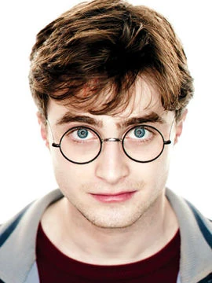
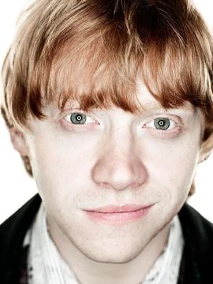
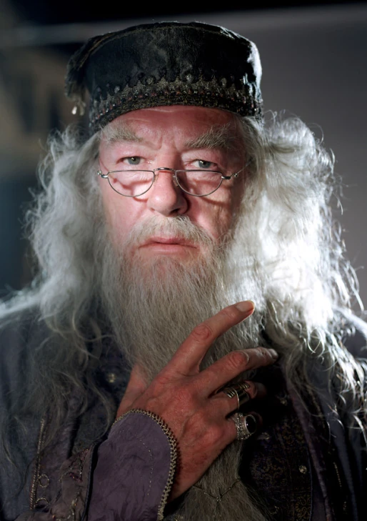
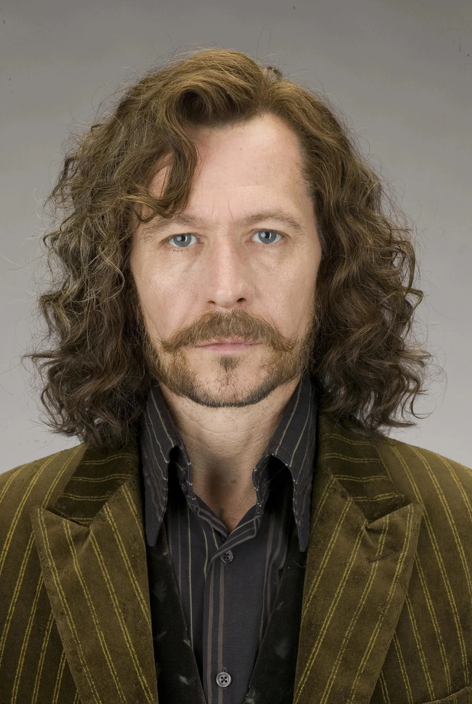
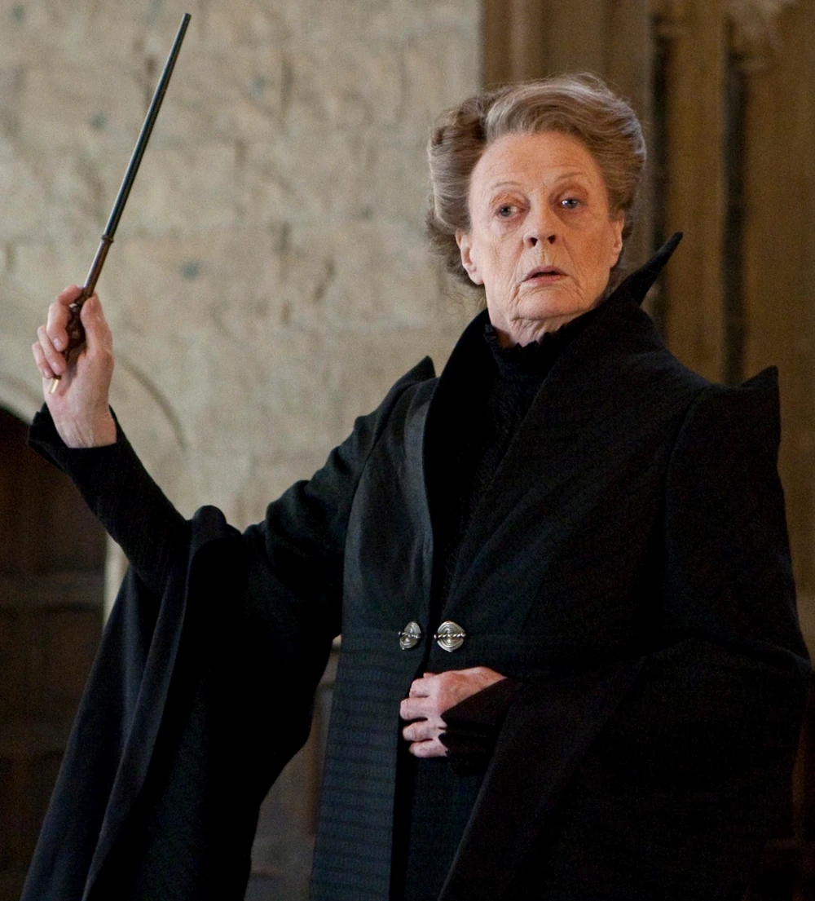

Założyciel - Godryk Gryffindor
Gryffindor— jeden z czterech domów w Szkole Magii i Czarodziejstwa w Hogwarcie.
Jego nazwa pochodzi od nazwiska Godryka Gryffindora, jednego z czworga
legendarnych założycieli szkoły. Mieszkańców tego domu nazywano w gwarze
uczniowskiej Gryfonami.
Uczniowie
Harry Potter Harry James Potter (ur. 31 lipca 1980 r.) — czarodziej półkrwi, jedyne dziecko Jamesa i Lily Potterów. Najbardziej znany czarodziej XX w. Swoją sławę „zawdzięcza” proroctwu wypowiedzianemu na początku 1980 roku przez Sybillę Trelawney dotyczącą Lorda Voldemorta i chłopca urodzonego pod koniec siódmego miesiąca. W tym okresie urodziło się dwóch chłopców, jednakże, to właśnie Harry został wybrany jako równy Czarnemu Panu. W październiku 1981 roku Lord Voldemort zabił rodziców Harry'ego ukrywających się przy pomocy zaklęcia Fideliusa w Dolinie Godryka, pragnących za wszelką cenę uchronić swoje, zaledwie roczne i jedyne dziecko. Wydał ich Peter Pettigrew, który nawet nie chciał myśleć by zginąć za swojego przyjaciela i jego żonę. Ta wczesna próba usunięcia przeszkody na drodze do panowania nad światem czarodziejów nie powiodła się i doprowadziła do końca Pierwszej Wojny Czarodziejów, co było równoznaczne z upadkiem Czarnego Pana. Od tej chwili cały świat, znał Harry'ego jako „Chłopca, który przeżył”, czyli jedyną osobę, która do tej pory przeżyła mordercze zaklęcie. |
Hermiona GrangerHermiona Jean Granger (ang. Hermione Jean Granger) (ur. 19 września 1979 r. prawdopodobnie w Londynie) — czarownica mugolskiego pochodzenia; jedyna córka dentystów - pani i pana Grangerów; żona Rona Weasleya, matka jego dwójki dzieci - Rose i Hugona Granger-Weasleyów; bliska przyjaciółka Harry'ego Pottera. W latach 1991-1999 uczennica Szkoły Magii i Czarodziejstwa w Hogwarcie, w którym została przydzielona do Gryffindoru. W 1995 roku została prefektem, brała także udział w bitwie o Hogwart. Po zakończeniu edukacji rozpoczęła pracę w ministerstwie magii w Departamencie Kontroli Nad Magicznymi Stworzeniami. Ostatecznie została Ministrem Magii. |
Ron Weasley Ronald „Ron” Bilius Weasley (ur. 1 marca 1980 r.) — czarodziej czystej krwi, szósty i najmłodszy syn Artura i Molly Weasleyów, brat Billa, Charliego, Percy'ego, bliźniaków Freda i George'a oraz najmłodszej z rodzeństwa - Ginny. W 1991 roku zaczął uczęszczać do Szkoły Magii i Czarodziejstwa w Hogwarcie, gdzie jak reszta rodziny został przydzielony do Gryffindoru. W czasie początków swojej magicznej edukacji zaprzyjaźnił się z Harrym Potterem i Hermioną Granger. Razem z przyjaciółmi w czasie swojej nauki w szkole stanął przed wieloma wyzwaniami, które zaważyły na całym magicznym świecie - pomógł pokonać profesora Quirrella i uratować Kamień filozoficzny, pomógł w uratowaniu własnej siostry z Komnaty Tajemnic, pomógł w powołaniu Gwardii Dumbledore'a oraz heroicznie walczył podczas Drugiej Wojny Czarodziejów w czasie której zginęło wielu jego przyjaciół, w tym również jego brat - Fred. W czasie nauki w Hogwarcie został mianowany prefektem Gryffindoru oraz stał się obrońcą reprezentacji swojego domu. W imię przyjaźni i walki o pokój w świecie czarodziejów porzucił szkołę i dołączył do Harry'ego i Hermiony w czasie wyprawy na poszukiwanie horkruksów. Po wojnie został aurorem i pomógł zreformować i zrewolucjonizować ówczesnemu Ministrowi Magii - Kingsleyowi, Ministerstwo Magii. Po dwóch latach pracy w zawodzie, porzucił go i postanowił pomóc swojemu bratu - George'owi w prowadzeniu Magicznych Dowcipów Weasleyów. Wziął ślub z koleżanką z czasów szkolnych - Hermioną Granger, z którą miał dwójkę dzieci: córkę Rose i syna Hugo. Ron został również ojcem chrzestnym Jamesa Syriusza Pottera, syna swojej siostry Ginny Weasley ze związku z Harrym Potterem. |
|---|---|---|
Albus Dumbledore Profesor Albus Persiwal Wulfryk Brian Dumbledore (Kawaler Orderu Merlina Pierwszej Klasy) (ur. 1881 - zm. 30 czerwca 1997 r. na Wieży Astronomicznej) — wybitny czarodziej półkrwi, najpierw nauczyciel transmutacji, a później wieloletni dyrektor Szkoły Magii i Czarodziejstwa w Hogwarcie, zdobywca Orderu Merlina pierwszej klasy za swoje dokonania w świecie czarodziejskim, Najwyższa Szycha Międzynarodowej Konfederacji Czarodziejów, Naczelny Mag Wizengamotu. Miał w swoim biurze feniksa, Fawkesa. W 1945 roku zasłynął z pokonania Gellerta Grindelwalda i osadzenia go w Nurmengardzie. Dumbledore założył Zakon Feniksa w czasie pierwszej wojny czarodziejów, który powstał do walki z Lordem Voldemortem. Po zniknięciu Czarnego Pana zakon został zawieszony, a reaktywowany po jego odrodzeniu się. Niszczył horkruksy Voldemorta, był jedynym czarodziejem, którego czarnoksiężnik się bał. Albus Dumbledore posiadał wszystkie Insygnia Śmierci, choć w różnym czasie. Został uwieczniony na kartach z Czekoladowych Żab. Albus był znany z prac alchemicznych z Nicolasem Flamelem i wynalezienia dwunastu sposobów wykorzystania smoczej krwi. Albus przez wielu uważany był za zdecydowanie najpotężniejszego, jak i najmądrzejszego czarodzieja na świecie. Dumbledore znał się na potężnej magii, był wyjątkowo inteligentny. Pod koniec swojego przepełnionego sukcesami życia, został mentorem Harry'ego Pottera. Wprowadzał go w życie Toma Marvolo Riddle'a, uczył chłopaka wiedzy o wrogu oraz zawsze powtarzał, że Voldemort to wielki czarodziej, ale brakuje mu miłości. Albus Dumbledore popełnił jednak błąd - założył nierozważnie pierścień Marvolo Gaunta, jeden z horkruksów, który wypalił mu rękę. Severus Snape powstrzymał śmierć profesora o kilkanaście miesięcy. Snape razem z Dumbledore'em zaplanowali śmierć dyrektora. Na Wieży Astronomicznej 30 czerwca 1997 roku Snape zabił Albusa Dumbledore'a na zakończenie bitwy na Wieży Astronomicznej. |
Syriusz Black III Syriusz Black III (ang. Sirius Black; ur. 3 listopada 1959 roku; zm. 18 czerwca 1996 w Departamencie Tajemnic w Sali Śmierci) — czarodziej czystej krwi. Syn Oriona i Walburgi Blacków oraz starszy brat Regulusa Arkturusa Blacka, który w późniejszym czasie został śmierciożercą. Chociaż był spadkobiercą domu Blacków, Syriusz nie zgadzał się z poglądami rodziny na temat czystości krwi i złamał tradycję, kiedy został przydzielony do Gryffindoru zamiast do Slytherinu w Hogwarcie - Szkole Magii i Czarodziejstwa, do której uczęszczał od 1971 do 1978 r. Wówczas jego relacje z rodziną pogorszyły się, zyskał za to przyjaźń z Jamesem Potterem, Remusem Lupinem i Peterem Pettigrew. Czterech przyjaciół, znanych również pod nazwą Huncwoci, wstąpiło do Zakonu Feniksa, aby walczyć przeciwko Lordowi Voldemortowi oraz jego śmierciożercom podczas Pierwszej Wojny. Syriusz przy okazji został ojcem chrzestnym Harry'ego Pottera oraz został poproszony, by stał się Strażnikiem Tajemnicy rodziny Potterów. Jednak uznał to za zbyt oczywiste i Strażnikiem Tajemnicy został Glizdogon, który potajemnie wstąpił w szeregi śmierciożerców. Pettigrew wyjawił miejsce pobytu Potterów Czarnemu Panu, a Syriusz poprzysiągł mu zemstę. Przebiegły Peter uwikłał Syriusza nie tylko w zdradzenie Lily i Jamesa Potterów, lecz także w zabójstwo na nim samym oraz dwunastu mugolach, których zabił Peter Pettigrew podczas ucieczki. Syriusz został zesłany do Azkabanu właśnie przez intrygę Glizdogona. Po dwunastu latach udało mu się uciec. Był oficjalnie jedyną osobą, której się udało tego dokonać. Syriusz zdemaskował Glizdogona i udowodnił swoją niewinność z pomocą starego przyjaciela - Remusa Lupina oraz Harry'ego. Po powrocie Lorda Voldemorta w 1995r., Syriusz powrócił do Zakonu. Został zabity przez swoją kuzynkę Bellatriks Lestrange, gdy próbował obronić Harry'ego podczas Bitwy w Departamencie Tajemnic. Ponownie pojawił się na chwilę, wraz z Jamesem, Lily i Remusem w 1998 r., dzięki Kamieniowi Wskrzeszenia, kiedy Harry chciał oddać się w ręce Voldemorta. |
Minerwa McGonagall Minerwa McGonagall (Dama Orderu Merlina Pierwszej Klasy) (ur. 4 października nieznanego roku) — wybitna czarownica półkrwi, ucząca transmutacji w Szkole Magii i Czarodziejstwa w Hogwarcie. W swojej karierze była także opiekunką Gryffindoru oraz dyrektorem i wicedyrektorem szkoły. Owdowiała w wieku 50 lat (jej mężem był Elphinstone Urquart). |